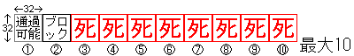

全体の流れ
- 「ゲーム」メニューから「ステージメーカーを開く」を選びます。
- 新しく作るなら、「ファイル」メニューの「新規作成」を押して、同じく「名前を付けて保存」を押してファイル名を付けます。
- 既にあるステージをいじるなら、「ファイル」メニューの「開く」です。
- 必要に応じて、マップチップ(画面右上)の「画像切り替え」をします。
- 全般設定(画面右側中央)で、摩擦力とか残り人数とか決めます。
- 画面右下のマップ設定でマップの広さとかタイトルとか決めます。
- マップチップとかキャラクターとかクリックして選んで、左側のマップエリアをマウスでかきます。
- マップセレクトでマップを増やしたり減らしたりできるぞ！
- 保存して「ゲーム」メニューの「ゲームに戻る」でゲームに戻って自分のステージを遊んでみよう！
マップエリア
左クリック・ドラッグでマップチップやキャラクターを置きます。
右クリックで置いてあるマップチップやキャラクターを選べます。
ふにゃは左右上の端にはおけません。
マップチップ
ステージファイルを置いたフォルダから選べます。
bmp形式がおすすめですが、PNGとかGIFとかも使えます。
マップチップの形式

- 1マス32x32ピクセル
- 横並びに最大10マス迄
- 一番左が通行可能
- 二番目がブロック
- 三番目以降はとげ
キャラクター
バナナの数は最大5つまで増やせます。
全般設定
摩擦力
0から100まで設定できます。
10がおすすめです。
0とか100はめちゃくちゃです。
残り人数
1から100まで設定できます。
背景色
マップの外の色を設定できます。
ステージメーカーでだけ、マップの境界がぼんやり光るようになりました。
マップセレクト
マップを選べます。
追加と削除もできます。
追加と削除もできます全部で30まで増やせます。
マップ設定
マップごとの設定をします。
サイズは40x40マスまで大きくできます。